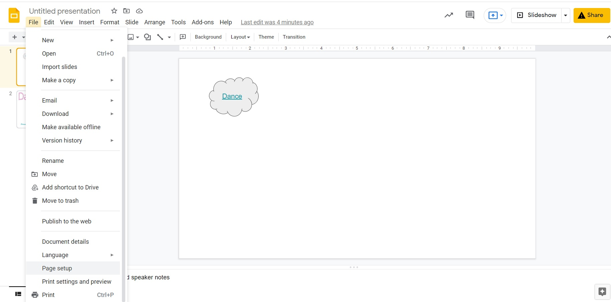
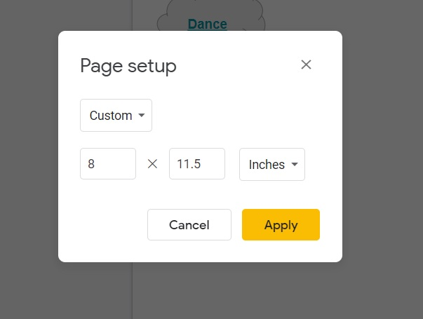
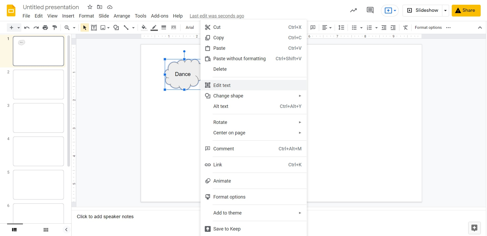
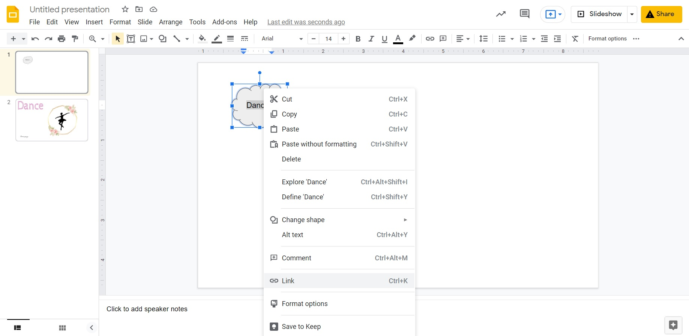
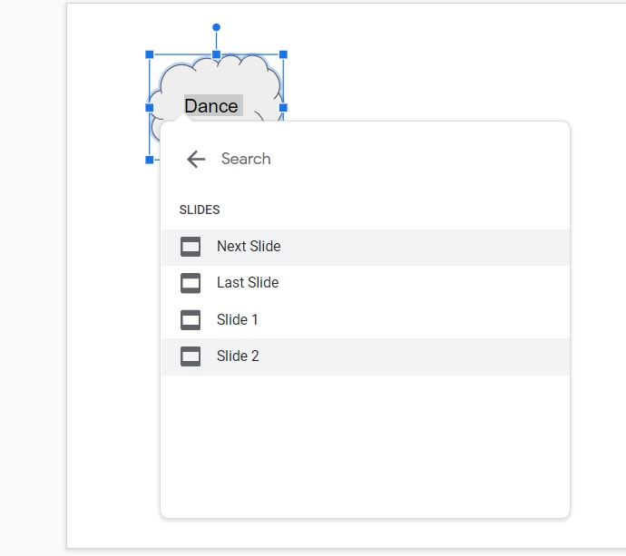

Information About Google Slides
What is Google Slides?
Google Slides is a free online website to create slideshows for presentations. Google Slides allows its users to edit and work with others on the same file at the same time.
This website allows users to create and design their own slides. Users can choose everything from the text, images, and background. It also lets users choose when certain objects on the page show up and when the next slide appears.
How Do You Use Google Slides?
Resizing Your Slides in Your Presentation
You can resize your slides if you want to make them bigger or smaller. To resize your slides:
- In the upper left corner, click the File tab.
- Towards the bottom of the drop-down menu, click Page setup.
- A new window will pop up. In the top drop-down menu, review the preset options, or you can click Custom and insert your own numbers.


Adding Text to a Shape
There are many occasions when you may want to add text to a shape. To do so, first add a shape to your presentation.
- In the lower tab bar, there is an icon with a square and circle. That is the shape icon. When you click it, you can choose the shape you want and add it to your presentation.
- Once your shape is added, choose the fill and border color.
- Using your computer mouse, right-click the shape, and a pop-up menu appears.
- On the menu, find and click Edit Text.
- Add the text you want and resize the text or shape based on what you need.
Linking Your Shape to Go to Other Slides
When linking a shape or text to another part of your presentation, you can make it interactive. To link an image to another slide, you want to link the text inside the shape. If there is no text inside the shape, you need a symbol or character to attach the link to.
To link text to another slide:
- Highlight the text that you want to link.
- Right-click while the text is highlighted, and a pop-up menu will appear.
- Find and click Link.
- Another pop-up appears with a search bar, or list of different documents. Click Slides in this Presentation at the bottom.
- Choose the slide that you want to link when you click on that shape.
- The word should turn blue to show that the link is completed.


Explore On Your Own
Practice using Google Slides by creating a short, interactive presentation about your favorite things.
Things to include in your presentation:
- Introduction slide that has shapes with text for each category:
- Add four additional slides with the answers (your favorite color, food, drink, and animal) and images of each one.
- Link the shapes on the introduction slide to the answer slide.